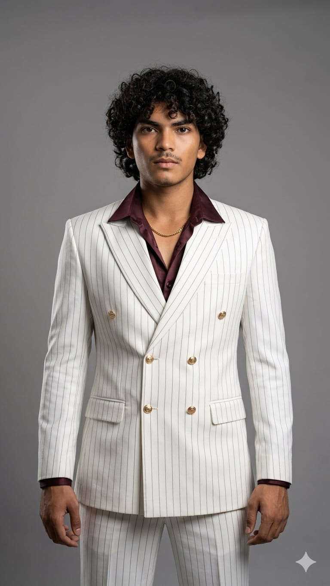

Veganism is a philosophy and way of living that seeks to exclude—as far as is possible and practicable—all forms of exploitation of, and cruelty to, animals for food, clothing, or any other purpose. While it is most commonly associated with a plant-based diet, an expanded definition recognizes veganism not just as a meal plan, but as an ethical, environmental, and socio-political movement.


| Catagary | Break fast | Lunch | Diner |
|---|---|---|---|
| Poor | Poha+Banana+Soya cahnk or Peanuts | Rice+Dal+Vegitable | Roti+Vegetable+Lentils |
| Middle class | Poha+Peanuts+fruit | rice+Dal or rajma+seasonal vegitable+Curd | Rot+vegitable curry+soya or tofu |
| Rich | Smoothie bowl+Avocado toast+Plant milk | Quinoa or brown rice+Tempeh+mixed vegitable> | Whole grain(roti)+Lentils+tofu+soup |
| Can add snacks | Rosted chana or peanuts,Popcorn,fruit Chat |
